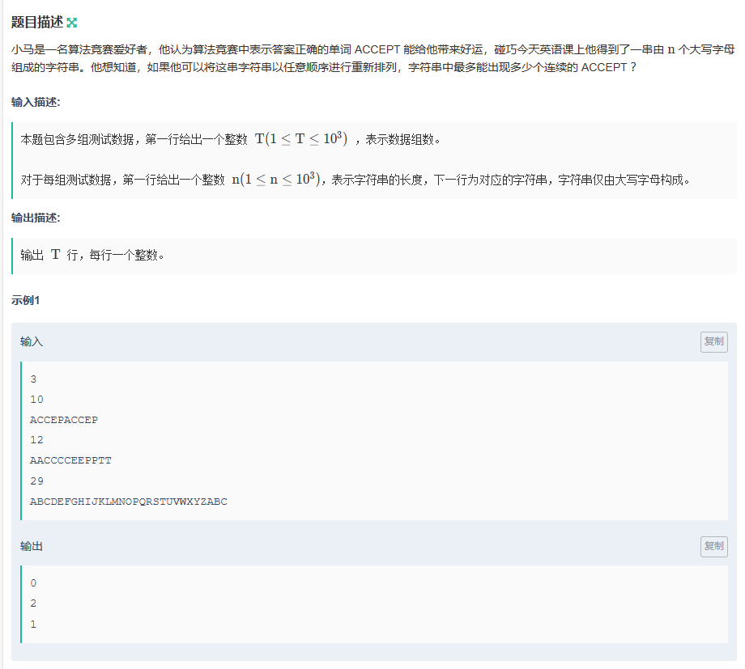
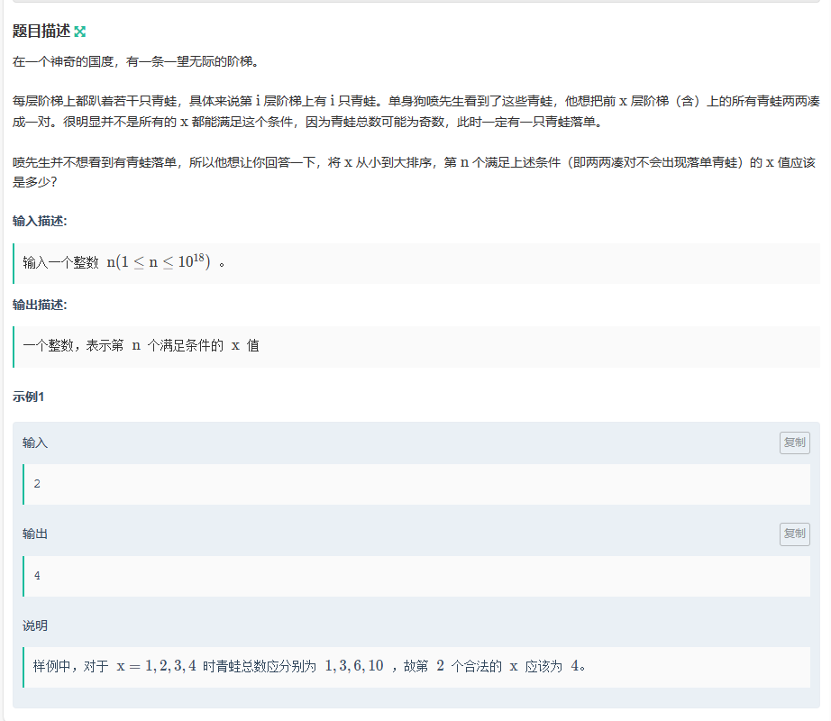
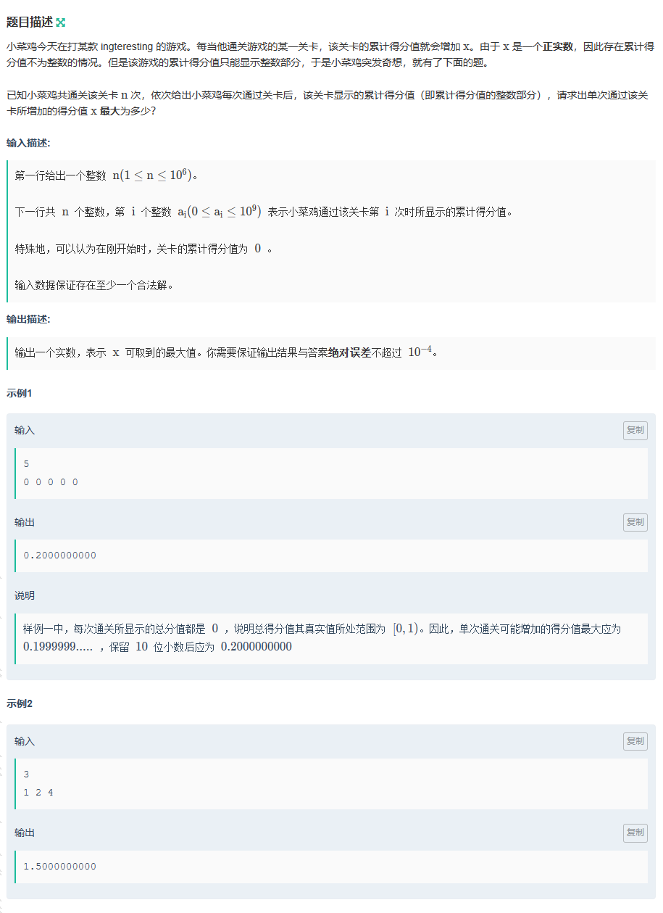
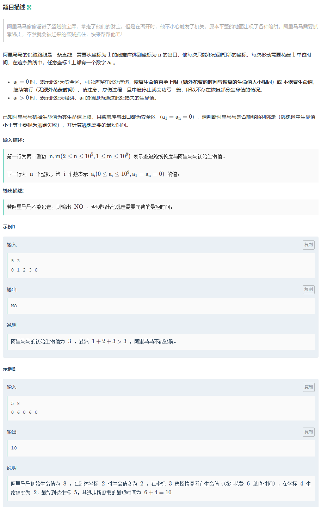
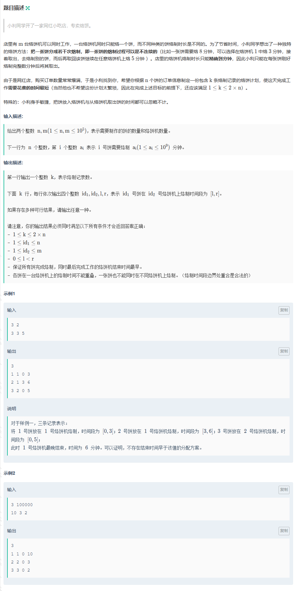
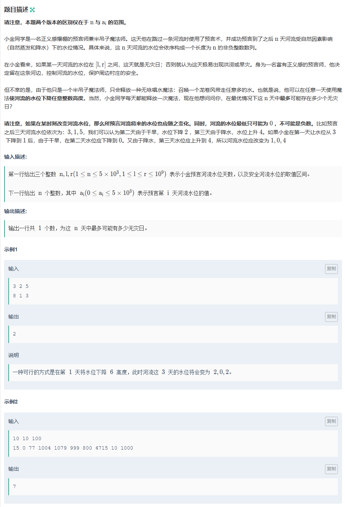
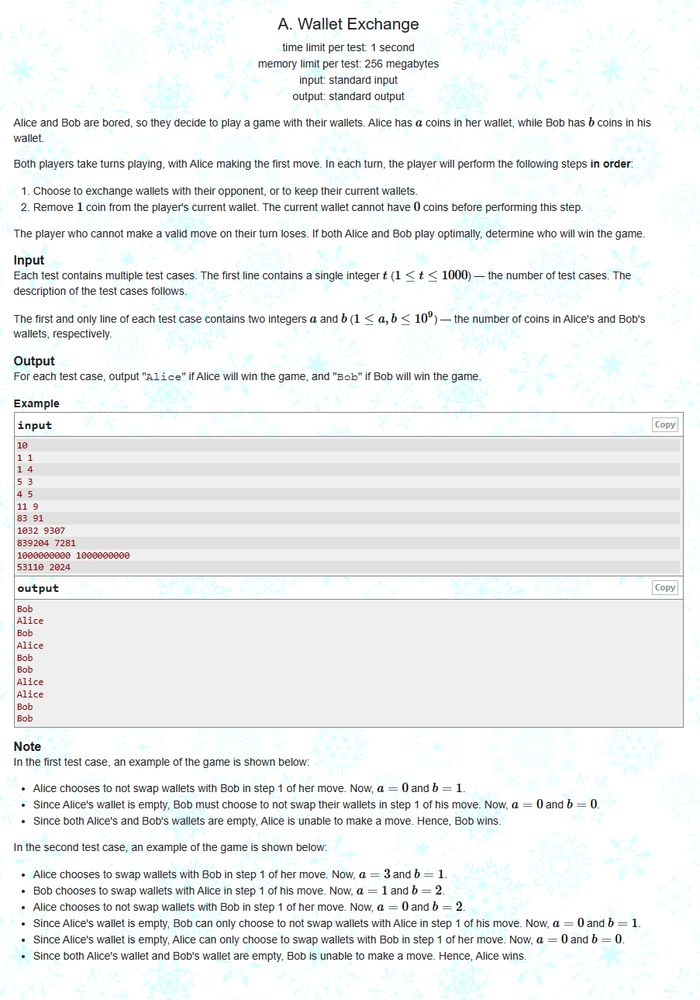
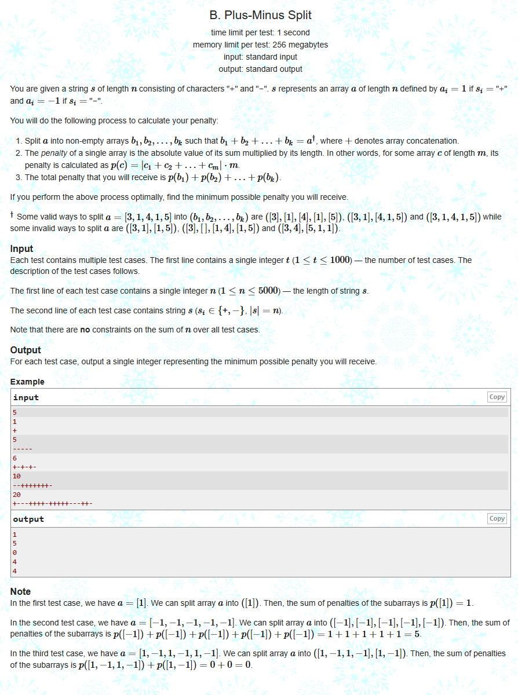
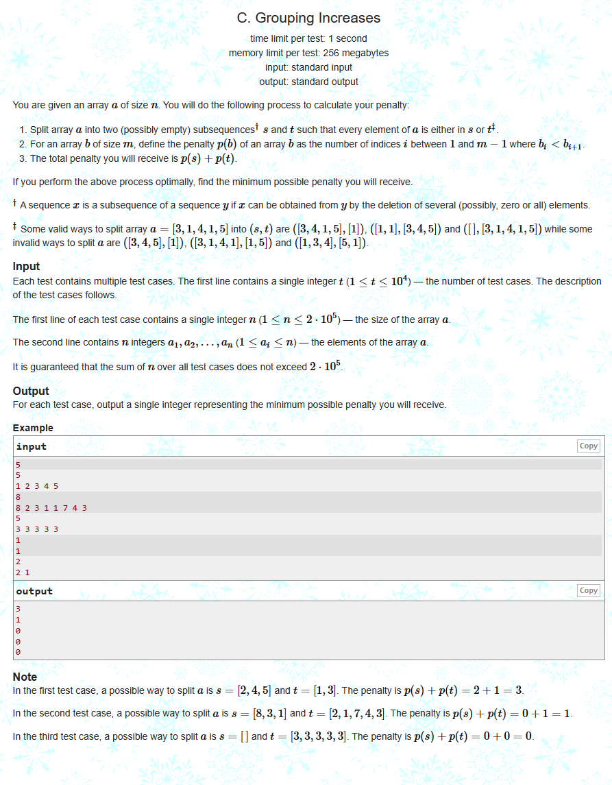

牛客小白月赛85 半小时不到开出A、B、C，后面两小时（包括赛后半小时）没开出来D，赛场上浅看了一下E没做，赛后补出来E，F题DP不会做，贪心过了40%，看大佬代码补。
A-ACCEPT 
原题链接https://ac.nowcoder.com/acm/contest/72980/A
1 2 3 4 5 6 7 8 9 10 11 12 13 14 15 16 17 18 19 20 21 22 23 24 25 26 27 28 29 30 31 32 33 34 35 36 #include <bits/stdc++.h> #define x first #define y second using namespace std;int main () int t; cin >> t; while (t--) { int n; cin >> n; string str; cin >> str; map<char , int > mci; mci['A' ] = 0 ; mci['C' ] = 0 ; mci['E' ] = 0 ; mci['P' ] = 0 ; mci['T' ] = 0 ; for (int i = 0 ; i < n; i++) { if (str[i] == 'A' || str[i] == 'C' || str[i] == 'E' || str[i] == 'P' || str[i] == 'T' ) mci[str[i]]++; } int ans = n; for (auto i : mci) { int tmp = i.y; if (i.x == 'C' ) tmp /= 2 ; ans = min (ans, tmp); } cout << ans << '\n' ; } return 0 ; }
B-咕呱蛙 
原题链接https://ac.nowcoder.com/acm/contest/72980/B
1 2 3 4 5 6 7 8 9 #include <bits/stdc++.h> using namespace std;int main () long long n; cin >> n; cout << n + ((n - 1 ) / 2 + 1 ) * 2 ; return 0 ; }
C-得分显示 
原题链接https://ac.nowcoder.com/acm/contest/72980/C
1 2 3 4 5 6 7 8 9 10 11 12 13 14 15 16 17 18 19 20 21 #include <bits/stdc++.h> using namespace std;const int N = 1e6 + 10 ;int p[N];int main () int n; long double x = 0 ; cin >> n; for (int i = 0 ; i < n; i++) cin >> p[i]; x = p[n - 1 ] + 1 ; for (int i = 0 ; i < n; i++) { long double tmp = (long double )(p[i] + 1 ) / (i + 1 ); x = min (x, tmp); } x -= 0.00000000001 ; printf ("%.10llf" , x); return 0 ; }
D-阿里马马与四十大盗 
原题链接https://ac.nowcoder.com/acm/contest/72980/D
1 2 3 4 5 6 7 8 9 10 11 12 13 14 15 16 17 18 19 20 21 22 23 24 25 26 27 28 29 30 31 32 33 34 35 36 37 38 39 40 41 42 43 44 45 46 #include <bits/stdc++.h> using namespace std;const int N = 1e5 + 10 ;using ll = long long ;ll a[N], s[N]; void solve () int n, m; cin >> n >> m; for (int i = 1 ; i <= n; i++) { cin >> a[i]; s[i] = s[i - 1 ] + a[i]; } ll sum = 0 , ans = 1e18 ; for (int i = 1 ; i <= n; i++) { if (a[i] == 0 ) sum = 0 ; else sum += a[i]; if (sum >= m) { cout << "NO\n" ; return ; } } sum = 0 ; for (int i = n; i >= 1 ; i--) { sum += a[i]; if (a[i] == 0 && sum < m) ans = min (ans, s[i - 1 ]); } cout << ans + n - 1 << '\n' ; } signed main () ios::sync_with_stdio (false ), cin.tie (0 ), cout.tie (0 ); solve (); return 0 ; }
E-烙饼 
原题链接https://ac.nowcoder.com/acm/contest/72980/E
1 2 3 4 5 6 7 8 9 10 11 12 13 14 15 16 17 18 19 20 21 22 23 24 25 26 27 28 29 30 31 32 33 34 35 36 37 38 39 40 41 42 43 44 45 46 47 48 49 50 51 52 53 #include <bits/stdc++.h> using namespace std;using ll = long long ;const int N = 1e5 + 10 ;const int M = 2 * N;ll a[N]; ll id1[M], id2[M], l[M], r[M]; ll si = 0 ; void add (ll a, ll b, ll c, ll d) id1[si] = a; id2[si] = b; l[si] = c; r[si] = d; si += 1 ; } int main () ll n, m, ma = 0 , s = 0 ; cin >> n >> m; for (int i = 1 ; i <= n; i++) { cin >> a[i]; s += a[i]; ma = max (ma, a[i]); } ll top = max (ma, (s + m - 1 ) / m); ll x = 1 , y = 0 ; for (int i = 1 ; i <= n; i++) { if (a[i] + y >= top) { add (i, x, y, top); a[i] -= top - y; x += 1 ; y = 0 ; } if (a[i] != 0 ) { add (i, x, y, y + a[i]); y += a[i]; } } cout << si << '\n' ; for (int i = 0 ; i < si; i++) { cout << id1[i] << ' ' ; cout << id2[i] << ' ' ; cout << l[i] << ' ' ; cout << r[i] << '\n' ; } return 0 ; }
F-龙吸水（EASY） 
原题链接https://ac.nowcoder.com/acm/contest/72980/F
1 2 3 4 5 6 7 8 9 10 11 12 13 14 15 16 17 18 19 20 21 22 23 24 25 #include <bits/stdc++.h> using namespace std;const int N = 1e4 ;int a[N], b[N];int main () int ans = 0 ; int n, l, r; cin >> n >> l >> r; for (int i = 1 ; i <= n; i++) { cin >> a[i]; b[i] = a[i] - a[i - 1 ]; } for (int i = 1 ; i <= n; i++) { a[i] = max (0 , a[i - 1 ] + b[i]); if (a[i] > r) a[i] = r; } for (int i = 1 ; i <= n; i++) if (l <= a[i] && a[i] <= r) ans += 1 ; cout << ans << '\n' ; return 0 ; }
CF Hello 2024 A. Wallet Exchange 
原题链接https://codeforces.com/contest/1919/problem/A
1 2 3 4 5 6 7 8 9 10 11 12 13 14 15 16 17 18 #include <bits/stdc++.h> using namespace std;int main () int t; cin >> t; while (t--) { int a, b; cin >> a >> b; int tmp = abs (a - b); if (tmp % 2 == 0 ) cout << "Bob\n" ; else cout << "Alice\n" ; } return 0 ; }
B. Plus-Minus Split 
原题链接https://codeforces.com/contest/1919/problem/B
1 2 3 4 5 6 7 8 9 10 11 12 13 14 15 16 17 18 19 20 21 #include <bits/stdc++.h> using namespace std;int main () int t; cin >> t; while (t--) { int n; string str; int add = 0 , sub = 0 ; cin >> n >> str; for (int i = 0 ; i < n; i++) if (str[i] == '+' ) add += 1 ; else sub += 1 ; cout << abs (add - sub) << '\n' ; } return 0 ; }
C. Grouping Increases 
原题链接https://codeforces.com/contest/1919/problem/C
1 2 3 4 5 6 7 8 9 10 11 12 13 14 15 16 17 18 19 20 21 22 23 24 #include <bits/stdc++.h> using namespace std;int main () int t; cin >> t; while (t--) { int n; cin >> n; vector<int > v (n) ; int a = 1e9 , b = 1e9 , x = 0 ; for (auto & i : v) { cin >> i; if (a > b) swap (a, b); if (i <= a) a = i; else if (i <= b) b = i; else a = i, x += 1 ; } cout << x << endl; } return 0 ; }